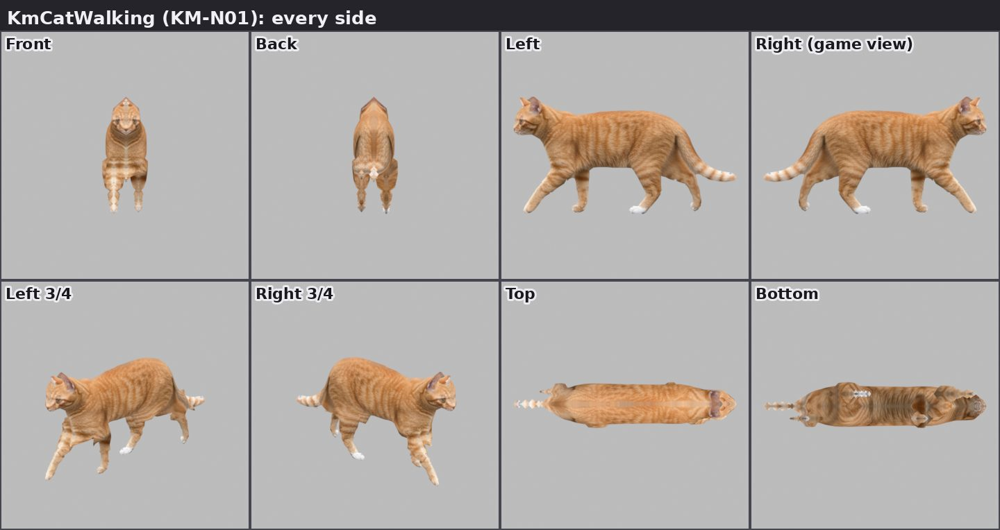
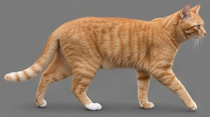
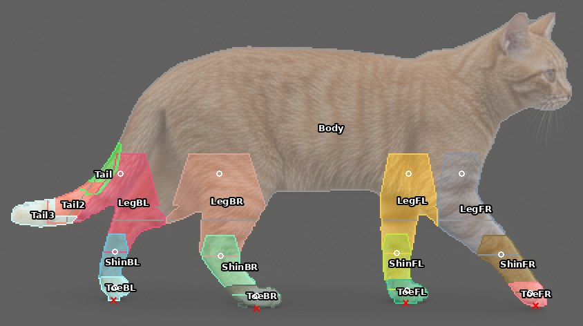
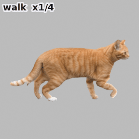
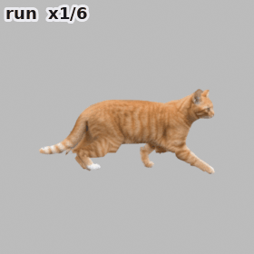
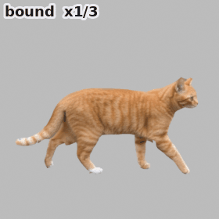

KmCatWalking
KM-N01 · KM-P4 · 0.56 × 0.12 × 0.30 m · 2240 triangles





1234567891011121314151617
The 17 checks: 16 passed, 1 n/a
| 1 | Every part once | pass | meshes: Body 1124 tris, Tail 62 tris, LegFR 120 tris, LegFL 108 tris, LegBR 156 tris, LegBL 146 tris, ShinFR 72 tris, ShinFL 58 tris, ShinBR 84 tris, ShinBL 42 tris, Tail2 52 tris, ToeFR 26 tris, ToeFL 28 tris, ToeBR 78 tris, ToeBL 20 tris, Tail3 64 tris; pivots only: Attach.Front, FootBL, FootBR, FootFL, FootFR. Checked in Top and Bottom. |
| 2 | Closed shell | pass | 0 edges with one face (a slit, or a fin that would vanish from behind); 127 of 3233 edges where the two faces touch along a thin part's edge (closed, no gap) |
| 3 | Depth from each part's own width | pass | deepest / half-width: Body 0.65, Tail 0.98, LegFR 0.92, LegFL 0.92, LegBR 0.89, LegBL 0.95, ShinFR 0.89, ShinFL 0.97, ShinBR 0.92, ShinBL 0.94, Tail2 0.96, ToeFR 0.96, ToeFL 0.96, ToeBR 0.92, ToeBL 0.94, Tail3 0.89 |
| 4 | Views the game sees have real source data | pass | The game sees it the right flank (Right), and at most the Right 3/4 as it passes; Front, Back, Top and Bottom are built from the side picture alone (a soft, mirrored likeness there, never seen in play). |
| 5 | Real size, triangles | pass | 0.56 x 0.12 x 0.30 m; 2240 triangles (the animal budget 2,500, docs/ART_DIRECTION.md); one 4096 atlas for the whole kit |
| 6 | Outline whole, no background or shadow | pass | looked at on the cuts sheet (cuts.jpg), and against the cut before the texture cue (D18) |
| 7 | No holes; real gaps open | pass | looked at on the cuts sheet: no hole in the fur or feathers; the backdrop between tail and back, legs and wings stays open |
| 8 | Things before a wall are their own models | n/a | an animal on a plain sheet |
| 9 | The look target's look | pass | KM-P4_animals_sheet.png: photographic, as KM-0 |
| 10 | Solid, nothing ghosted | pass | no see-through parts but real wings |
| 11 | No real brand or logo | pass | none (the Shiba's collar is plain) |
| 12 | No wires, no sky, crisp outline | pass | a plain sheet; the outline is cut from it at full resolution |
| 13 | Repairs listed | pass | fur and feathers found by their texture as well as their colour; the ground shadow removed (the lowest 13 % of the box); holes of fur or feather filled, gaps of smooth backdrop left open |
| 14 | Rig names and pivots | pass | Tail, LegFR, LegFL, LegBR, LegBL, ShinFR, ShinFL, ShinBR, ShinBL, Tail2, ToeFR, ToeFL, ToeBR, ToeBL, Tail3 (+ Attach.Front, FootBL, FootBR, FootFL, FootFR): origins at the joints |
| 15 | Joints overlap, no seam, no gap mid-motion | pass | every part overlaps the body; four legs, near and far: LegBL, LegBR, LegFL, LegFR; motions looked at frame by frame: walk, run, bound |
| 16 | Feet planted | pass | walk: sink 0.0 mm, lowest foot 0.0 mm up, held 69.0 mm; run: sink 0.0 mm, lowest foot 5.5 mm up, held 125.6 mm; bound: sink 0.0 mm, lowest foot 124.5 mm up, held 136.6 mm (tolerance 3.0 mm, 1 % of its height) |
| 17 | Each part holds only itself | pass | looked at on its part map at full size, part by part: Tail, LegFR, LegFL, LegBR, LegBL, ShinFR, ShinFL, ShinBR, ShinBL, Tail2, ToeFR, ToeFL, ToeBR, ToeBL, Tail3; every leg the picture shows is its own part, its own pixels only |